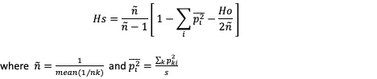
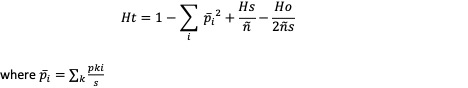
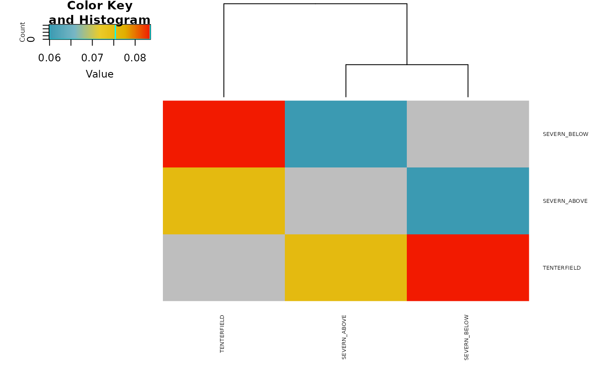

R/gl.report.fstat.r
gl.report.fstat.RdThis function calculates four genetic differentiation between populations statistics (see the "Details" section for further information).
Fst - Measure of the degree of genetic differentiation of subpopulations (Nei, 1987).
Fstp - Unbiased (i.e. corrected for sampling error, see explanation below) Fst (Nei, 1987).
Dest - Jost’s D (Jost, 2008).
Gst_H - Gst standardized by the maximum level that it can obtain for the observed amount of genetic variation (Hedrick 2005).
Sampling errors arise because allele frequencies in our samples differ from those in the subpopulations from which they were taken (Holsinger, 2012).
Confident Intervals are obtained using bootstrapping.
gl.report.fstat(
x,
nboots = 0,
conf = 0.95,
CI.type = "bca",
ncpus = 1,
plot.stat = "Fstp",
plot.display = TRUE,
palette.divergent = gl.colors("div"),
font.size = 0.5,
plot.dir = NULL,
plot.file = NULL,
verbose = NULL,
...
)Name of the genlight object containing the SNP data [required].
Number of bootstrap replicates to obtain confident intervals [default 0].
The confidence level of the required interval [default 0.95].
Method to estimate confident intervals. One of "norm", "basic", "perc" or "bca" [default "bca"].
Number of processes to be used in parallel operation. If ncpus > 1 parallel operation is activated,see "Details" section [default 1].
Statistic to plot. One of "Fst","Fstp","Dest" or "Gst_H" [default "Fstp"].
If TRUE, a heatmap of the pairwise static chosen is displayed in the plot window [default TRUE].
A color palette function for the heatmap plot [default gl.colors("div")].
Size of font for the labels of horizontal and vertical axes of the heatmap [default 0.5].
Directory in which to save files [default working directory].
Name for the RDS binary file to save (base name only, exclude extension) [default NULL].
Verbosity: 0, silent or fatal errors; 1, begin and end; 2, progress log; 3, progress and results summary; 5, full report [default NULL, unless specified using gl.set.verbosity]
Parameters passed to function heatmap.2 (package gplots).
Two lists, the first list contains matrices with genetic statistics taken pairwise by population, the second list contains tables with the genetic statistics for each pair of populations. If nboots > 0, tables with the four statistics calculated with Low Confidence Intervals (LCI) and High Confidence Intervals (HCI).
Even though Fst and its relatives can predict evolutionary processes (Holsinger & Weir, 2009), they are not true measures of genetic differentiation in the sense that they are dependent on the diversity within populations (Meirmans & Hedrick, 2011), the number of populations analysed (Alcala & Rosenberg, 2017) and are not monotonic (Sherwin et al., 2017). Recent approaches have been developed to accommodate these mathematical restrictions (G'ST; "Gst_H"; Hedrick, 2005, and Jost's D; "Dest"; Jost, 2008). More recently, novel approaches based on information theory (Mutual Information; Sherwin et al., 2017) and allele frequencies (Allele Frequency Difference; Berner, 2019) have distinct properties that make them valuable resources to interpret genetic differentiation between populations.
Note that each measure of genetic differentiation has advantages and drawbacks, and the decision of using a particular measure is usually based on the research question.
Statistics calculated
The equations used to calculate the statistics are shown below.
Ho - Unbiased estimate of observed heterozygosity across subpopulations (Nei, 1987, pp. 164, eq. 7.38) is calculated as:
where Pkii represents the proportion of homozygote ii for allele i in individual k and s represents the number of subpopulations.
Hs - Unbiased estimate of the expected heterozygosity under Hardy-Weinberg equilibrium across subpopulations (Nei, 1987, pp. 164, eq. 7.39) is calculated as:

where ñ is the harmonic mean of nk (the number of individuals in each subpopulation), pki is the proportion (sometimes misleadingly called frequency) of allele i in subpopulation k.
Ht - Heterozygosity for the total population (Nei, 1987, pp. 164, eq. 7.40) is calculated as:

Dst - The average allele frequency differentiation between populations (Nei, 1987, pp. 163) is calculated as:
Htp - Unbiased estimate of Heterozygosity for the total population (Nei, 1987, pp. 165) is calculated as:
Dstp - Unbiased estimate of the average allele frequency differentiation between populations (Nei, 1987, pp. 165)
Fst - Measure of the extent of genetic differentiation of subpopulations (Nei, 1987, pp. 162, eq. 7.34) is calculated as:
Fstp - Unbiased measure of the extent of genetic differentiation of subpopulations (Nei, 1987, pp. 163, eq. 7.36) is calculated as:
Dest - Jost’s D (Jost, 2008, eq. 12)
Gst-max - The maximum level that Gst can obtain for the observed amount of genetic variation (Hedrick 2005, eq. 4a) is calculated as:
Gst-H - Gst standardized by the maximum level that it can obtain for the observed amount of genetic variation (Hedrick 2005, eq. 4b) is calculated as:
Confident Intervals
The uncertainty of a parameter, in this case the mean of the statistic, can be summarised by a confidence interval (CI) which includes the true parameter value with a specified probability (i.e. confidence level; the parameter "conf" in this function).
In this function, CI are obtained using Bootstrap which is an inference method that samples with replacement the data (i.e. loci) and calculates the statistics every time.
This function uses the function boot (package boot) to perform the bootstrap replicates and the function boot.ci (package boot) to perform the calculations for the CI.
Four different types of nonparametric CI can be calculated (parameter "CI.type" in this function):
First order normal approximation interval ("norm").
Basic bootstrap interval ("basic").
Bootstrap percentile interval ("perc").
Adjusted bootstrap percentile interval ("bca").
The studentized bootstrap interval ("stud") was not included in the CI types because it is computationally intensive, it may produce estimates outside the range of plausible values and it has been found to be erratic in practice, see for example the "Studentized (t) Intervals" section in:
www.r-bloggers.com/2019/09/understanding-bootstrap-confidence-interval-output-from-the-r-boot-package
Nice tutorials about the different types of CI can be found at:
https://www.datacamp.com/tutorial/bootstrap-r
Efron and Tibshirani (1993, p. 162) and Davison and Hinkley (1997, p. 194) suggest that the number of bootstrap replicates should be between 1000 and 2000.
It is important to note that unreliable confident intervals will be obtained if too few number of bootstrap replicates are used. Therefore, the function boot.ci will throw warnings and errors if bootstrap replicates are too few. Consider increasing then number of bootstrap replicates to at least 200.
The "bca" interval is often cited as the best for theoretical reasons, however it may produce unstable results if the bootstrap distribution is skewed or has extreme values. For example, you might get the warning "extreme order statistics used as endpoints" or the error "estimated adjustment 'a' is NA". In this case, you may want to use more bootstrap replicates or a different method or check your data for outliers.
The error "estimated adjustment 'w' is infinite" means that the estimated adjustment ‘w’ for the "bca" interval is infinite, which can happen when the empirical influence values are zero or very close to zero. This can be caused by various reasons, such as:
The number of bootstrap replicates is too small, the statistic of interest is constant or nearly constant across the bootstrap samples, the data contains outliers or extreme values.
You can try some possible solutions, such as:
Increasing the number of bootstrap replicates, using a different type of bootstrap confidence interval or removing or transforming the outliers or extreme values.
Plotting
The plot can be customised by including any parameter(s) from the function heatmap.2 (package gplots).
For the color palette you could try for example:
> res <- gl.report.fstat(platypus.gl, palette.divergent = viridis)
If a plot.file is given, the plot arising from this function is saved as an "RDS" binary file using the function saveRDS (package base); can be reloaded with function readRDS (package base). A file name must be specified for the plot to be saved.
If a plot directory (plot.dir) is specified, the gplot binary is saved to that directory; otherwise to the tempdir().
Your plot might not shown in full because your 'Plots' pane is too small (in RStudio). Increase the size of the 'Plots' pane before running the function. Alternatively, use the parameter 'plot.file' to save the plot to a file.
Parallelisation
If the parameter ncpus > 1, parallelisation is enabled. In Windows, parallel computing employs a "socket" approach that starts new copies of R on each core. POSIX systems, on the other hand (Mac, Linux, Unix, and BSD), utilise a "forking" approach that replicates the whole current version of R and transfers it to a new core.
Opening and terminating R sessions in each core involves a significant amount of processing time, therefore parallelisation in Windows machines is only quicker than not usung parallelisation when nboots > 1000-2000.
Alcala, N., & Rosenberg, N. A. (2017). Mathematical constraints on FST: Biallelic markers in arbitrarily many populations. Genetics (206), 1581-1600.
Berner, D. (2019). Allele frequency difference AFD–an intuitive alternative to FST for quantifying genetic population differentiation. Genes, 10(4), 308.
Davison AC, Hinkley DV (1997). Bootstrap Methods and their Application. Cambridge University Press: Cambridge.
Efron, B. (1979). Bootstrap methods: Another look at the jackknife. Annals of Statistics 7, 1–26.
Efron B, Tibshirani RJ (1993). An Introduction to the Bootstrap. Chapman and Hall: London.
Hedrick, P. W. (2005). A standardized genetic differentiation measure. Evolution, 59(8), 1633-1638.
Holsinger, K. E. (2012). Lecture notes in population genetics.
Holsinger, K. E., & Weir, B. S. (2009). Genetics in geographically structured populations: defining, estimating and interpreting FST. Nature Reviews Genetics, 10(9), 639- 650.
Jost, L. (2008). GST and its relatives do not measure differentiation. Molecular Ecology, 17(18), 4015-4026.
Meirmans, P. G., & Hedrick, P. W. (2011). Assessing population structure: FST and related measures. Molecular Ecology Resources, 11(1), 5-18.
Nei, M. (1987). Molecular evolutionary genetics: Columbia University Press.
Sherwin, W. B., Chao, A., Jost, L., & Smouse, P. E. (2017). Information theory broadens the spectrum of molecular ecology and evolution. Trends in Ecology & Evolution, 32(12), 948-963.
res <- gl.report.fstat(platypus.gl)
#> Starting gl.report.fstat
#> Processing genlight object with SNP data
#> Warning: data include loci that are scored NA across all individuals.
#> Consider filtering using gl <- gl.filter.allna(gl)
#> $Stat_matrices
#> $Stat_matrices$Fst
#> SEVERN_ABOVE SEVERN_BELOW TENTERFIELD
#> SEVERN_ABOVE NA 0.0309 0.0392
#> SEVERN_BELOW 0.0309 NA 0.0436
#> TENTERFIELD 0.0392 0.0436 NA
#>
#> $Stat_matrices$Fstp
#> SEVERN_ABOVE SEVERN_BELOW TENTERFIELD
#> SEVERN_ABOVE NA 0.0599 0.0754
#> SEVERN_BELOW 0.0599 NA 0.0836
#> TENTERFIELD 0.0754 0.0836 NA
#>
#> $Stat_matrices$Dest
#> SEVERN_ABOVE SEVERN_BELOW TENTERFIELD
#> SEVERN_ABOVE NA 0.0101 0.0134
#> SEVERN_BELOW 0.0101 NA 0.0150
#> TENTERFIELD 0.0134 0.0150 NA
#>
#> $Stat_matrices$Gst_H
#> SEVERN_ABOVE SEVERN_BELOW TENTERFIELD
#> SEVERN_ABOVE NA 0.0388 0.0498
#> SEVERN_BELOW 0.0388 NA 0.0554
#> TENTERFIELD 0.0498 0.0554 NA
#>
#>
#> $Stat_tables
#> Stat_tables.SEVERN_ABOVE_vs_SEVERN_BELOW
#> Fst 0.0309
#> Fstp 0.0599
#> Dest 0.0101
#> Gst_H 0.0388
#> Stat_tables.SEVERN_ABOVE_vs_TENTERFIELD
#> Fst 0.0392
#> Fstp 0.0754
#> Dest 0.0134
#> Gst_H 0.0498
#> Stat_tables.SEVERN_BELOW_vs_TENTERFIELD
#> Fst 0.0436
#> Fstp 0.0836
#> Dest 0.0150
#> Gst_H 0.0554
#>
#> Starting gl.plot.heatmap
#>
#> Found more than one class "dist" in cache; using the first, from namespace 'spam'
#> Also defined by ‘BiocGenerics’
#> Processing a data matrix
#>

#> Completed: gl.plot.heatmap
#> Completed: gl.report.fstat
#>